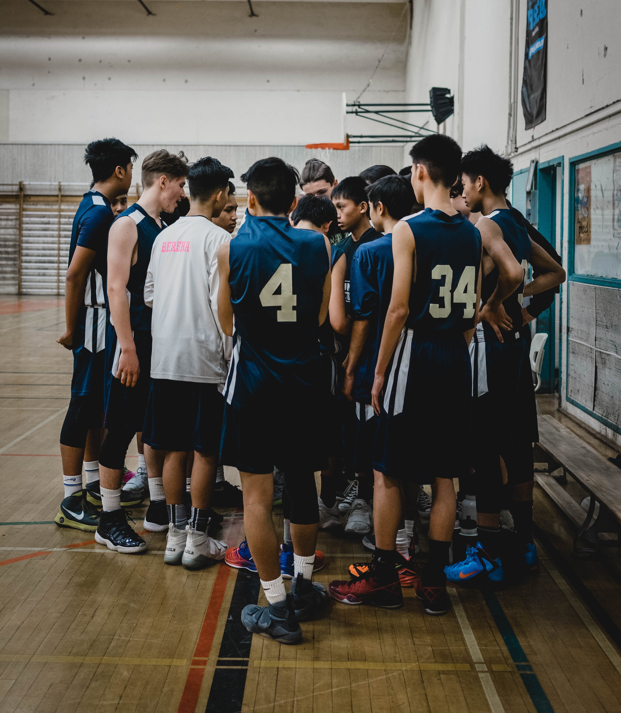

Coaching
I have been proud to coach high school boys basketball since the 2017-18 season. I have experience as a Varsity assistant and head coach at the JV and Freshman levels. I enjoy coaching because it allows me to continue teaching after leaving the classroom. Basketball — and sports in general — is a great way for young people to learn skills that will benefit them throughout their lives and prepare them for any career they choose. They leverage team work, discipline, hard work, and determination to learn the game of basketball, have fun, and compete at the highest level achievable.